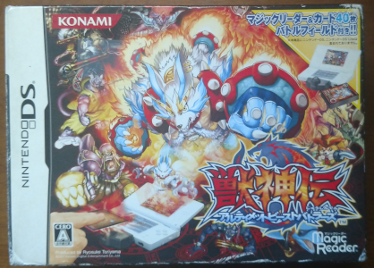
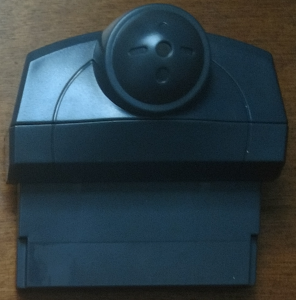
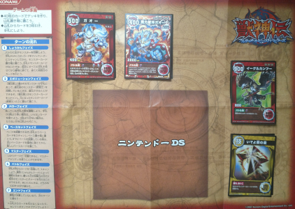
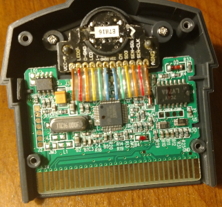
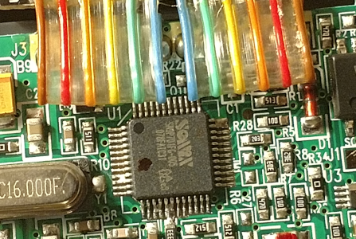
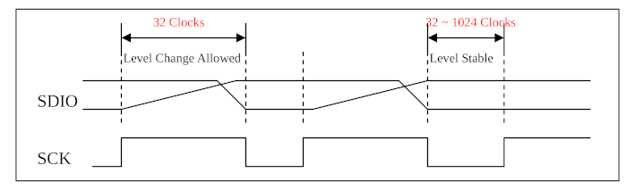
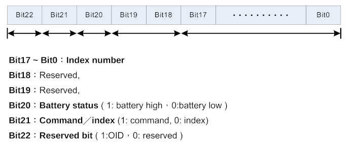
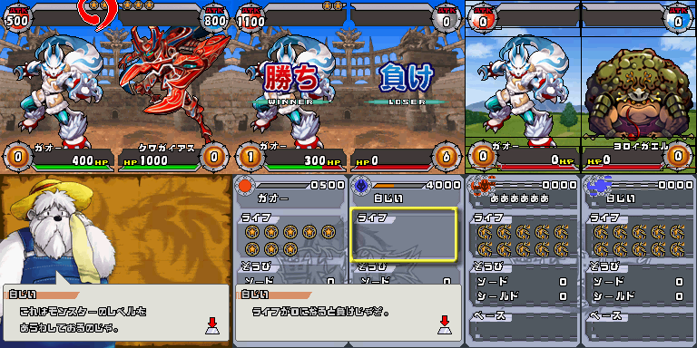

Beast Mode
Earlier this year, I went into a bit of a frenzy buying all kinds of NDS hardware to research. With GBE+ finally running more and more games, I anticipated working on many of the Slot-2 accessories for the system. I purchased more items than I had time to examine, so I ended up with quite a backlog. However, due to the COVID-19 pandemic, getting things from Japan to the United States is now rather expensive. In hindsight, it was very fortunate that I went shopping back then. The virus has seriously disrupted international shipping and has directly affected my efforts to document various games and products. Of particular note, I'm still waiting on a very interesting piece to come out of Europe. In the meantime, this is the perfect opportunity to really dive into some stuff that's been sitting on my shelves for a while now.
In 2007, Konami launched a special add-on for the Nintendo DS called the "Magic Reader". It came bundled with the game Juushinden: Ultimate Beast Battlers. The title features card-based duels using monsters, very similar to the Pokemon TCG or Yu-Gi-Oh games. Unique to Juushinden, however, is the ability to scan real, physical cards into the game via the Magic Reader. By simply tapping the card against the device, the software registers it, thereby allowing players to use the digital version. Unlike other card-reading hardware such as the e-Reader, or HCV-1000, the Magic Reader does not use any sort of swiping mechanism. In fact, Juushinden's cards don't appear to have any visible barcodes or dotcodes. Perhaps it really is magic?
Juushinden and its Magic Reader were never released outside of Japan. While trading-card games are quite popular in that country, overseas is a different market. Ultimately, the video game and the scanner were one-off, having small and limited impact. Konami's attempt at something new remains a bit of a curiosity in that light. Even though the Magic Reader wasn't wildly successful, there's still a fair bit of knowledge we can glean from the product. At the very least it's an interesting technical demonstration of how card-game-to-video-game interfaces could have evolved, and that much is worth preserving. Just as well, Juushinden was completely unplayable on any NDS emulator without support for the Magic Reader. Once again, we've got to ensure that such history isn't lost.
Card Collecting
Obtaining a Complete-in-Box copy of Juushinden pre-pandemic was relatively straightforward. On places like Yahoo Auctions Japan, it's pretty cheap, generally costing about 900 yen. Like other NDS games with extra hardware, Juushinden comes in a large cardboard box. While the packaging for titles like Mag Kid or Oshare Majo are all the same dimensions, Juushinden's is notably bigger. Inside, players will find the NDS game, the Magic Reader, a deck of 40 cards used as a "Starter Pack" and a folded, semi-glossy playing mat for the card game. None of the contents actually takes up a lot of space, so perhaps the size is just for attracting potential buyers.
  
What you'll find inside every complete copy of Juushinden: Ultimate Beast Battlers.
The Magic Reader itself is a dark gray device that sticks out of the GBA slot. By default, it's designed with the NDS Lite in mind, but it has a removable bit of plastic to better fit the original DS. It has a large bulb at the end where players are supposed to place the card to be read. Other than that, it has a white sticker on the back about the same size as a standard GBA cart label. Internally, the Magic Reader has a bunch of colored cables running to some components, two LEDs and a CCD module.
 
The innards of the Magic Reader are crowded but colorful.
When trying to play Juushinden via emulation, the game will immediately complain about not detecting the Magic Reader. Players can't reach the title screen or even see the company logos fade in or out. Without the hardware, the software shuts players out almost instantly. During the initial boot process, Juushinden merely wants to see whether or not the Magic Reader is inserted. This is the "device detection" phase common for many games that use Slot-2 add-ons. The process involves reading values from addresses reserved for the GBA cart. Slot-2 accessories will return special values instead of real ROM data, which is then used for identification. The ID used for the Magic Reader is very simple and summed up in the following psuedo-code:
IF ADDRESS AND 1 THEN:
RETURN 0xFB
ELSE:
RETURN 0xFF
Emulating that much allows Juushinden to run, granting access to the game's main menu and story mode. From there, things proceed normally until the tutorial asks players to start scanning cards. At this point, the next step to truly reverse-engineering the Magic Reader is to gather data by logging all reads and writes related to it. Input/output registers for many Slot-2 devices are typically located somewhere within the 0xA000000::0xAFFFFFF address range. True enough, the logs revealed that the Magic Reader exclusively uses 0xA000000. I named this register Magic Reader Control or "MR_CNT" for easier reference. With the read/write data captured, I tried to analyze how the Magic Reader operated. However, it became immediately clear I had no idea what was going on.
READ MR_CNT
WRITE TO MR_CNT 0x42
READ MR_CNT
WRITE TO MR_CNT 0x03
WRITE TO MR_CNT 0x02
WRITE TO MR_CNT 0x02
READ MR_CNT
WRITE TO MR_CNT 0x02
READ MR_CNT
WRITE TO MR_CNT 0x00
WRITE TO MR_CNT 0x03
WRITE TO MR_CNT 0x02
WRITE TO MR_CNT 0x01
WRITE TO MR_CNT 0x00
WRITE TO MR_CNT 0x01
WRITE TO MR_CNT 0x00
...
It was obvious that the value 0x42 was something special, appearing at the very start and nowhere else. The rest of the writes were just 0s, 1s, 2s, and 3s in different combinations. A bunch of reads were scattered here and there. Just staring at the raw numbers didn't help a lot, as there really wasn't any sort of context to examine. I was able to guess that however the NDS communicated with the Magic Reader, it mostly only used Bits 0 and 1 of the MR_CNT register. Beyond that much, I couldn't make out what exactly was happening. I strongly suspected that the NDS was trying to initialize the Magic Reader somehow, as most of the data logged came right after booting Juushinden.
After peeking at the bytes transfered to and from the device, I decided to search for any relavant datasheets for the Magic Reader. One of the parts inside was labeled as a Sonix SN9P701FG-005. Thankfully there was a nice, detailed PDF available from Sonix themselves. Unfortunately, even with that documentation in hand, I couldn't quite make sense of how it applied to the NDS. The datasheet described a serial interface for sending commands or receiving data from an image processor, but it didn't mention anything about accessing that through a memory-mapped register like MR_CNT. MR_CNT was very likely the method by which the NDS used the SN9P701FG's serial interface, but how?
To answer that question, I browsed through some of Juushinden's code while it made those reads and writes. Whenever the game read MR_CNT, it only ever checked a single bit. Depending on whether Bit 1 was a "0" or a "1" at certain points, the Magic Reader initialization code seemed to hang or timeout. At the time, I didn't really know what I was doing, but it seemed like a good idea to have GBE+ temporarily fake some responses when reading MR_CNT to allow the game to think the Magic Reader was working. During the card-scanning sequence in the tutorial, reads and writes to the Magic Reader changed as well according to Bit 1 of MR_CNT, and fiddling with those responses lead to a rather interesting bit of programming.
Juushinden constantly pinged MR_CNT waiting for Bit 1 to become zero. Once that happened, it read from MR_CNT 23 times, constructing a 23-bit number by using the current value of Bit 1. It appeared that Bit 1 of MR_CNT was supposed to go low to signal to the NDS that the Magic Reader will send 23-bits of data. The transfer used one bit at a time, therefore it was likely using the serial interface mentioned in the datasheets. Investigating more game code, I saw this 23-bit number was later compared to several constant values such as 0x60FFF8, 0x60FFF7, and 0x60FFF1. These constants were described in Sonix's PDF as commands from the SN9P701FG to the NDS. Uncovering this information proved a major breakthrough in reverse-engineering the Magic Reader.
Juushinden's game code was looking for the OIDCmd_PowerOn, OIDCmd_PowerDown, or OIDCmd_SystemReset commands. The Magic Reader responds with that data when the NDS attempts to read the status of the SN9P701FG. The PDF explained how the two-wire interface works during read cycles, so I began to figure out how the NDS used MR_CNT. The first line, SCK (or Serial Clock), drives the serial communications. It's quite analogous to a pumping heart or a piston. SCK needs to continually transition from a HIGH state (1) to a LOW state (0) in order to transfer a bit. The second line, SDIO (or Serial Data In/Out) is the data bit to send or receive depending on the operation.

A diagram from the PDF illustrating SCK and SDIO
Looking at the logs of all MR_CNT writes, I noticed that Bit 0 of that register always moved between HIGH and LOW states, therefore it was obviously SCK. Bit 1 or MR_CNT appeared to be SDIO, as its data was used to construct the 23-bit values returned from the Magic Reader. With this knowledge, I mapped all of the NDS' interactions with MR_CNT to specific read and write cycles for the SN9P701FG. In effect, I was now able to determine what commands the NDS sent to the Magic Reader and when the Magic Reader was responding with data. Essentially, the NDS would write 8-bit commands, afterwards it would read a 23-bit return value from the attached device. Properly emulating the Magic Reader would require GBE+ to send the correct 23-bits of information whenever the NDS probed.
Not Quite Magic
Looking back at the boot process, the first thing the NDS did with the Magic Reader was write 0x42 to MR_CNT; afterwards it read a single 23-bit value. Initially, I took a guess and made GBE+ return the OIDCmd_PowerDown response. This in turn caused the NDS to issue a new 8-bit command called UserCmd_CheckOIDStatus. The purpose of that command is to simply ping the SN9P701FG about its current status, so GBE+ returned the same 23-bit value as before, since nothing had changed. Following that, the NDS fired another command called UserCMD_AutoSleepFunDisable along with an unknown command not mentioned in the PDF. The first command disabled the sleep function of the camera. It can be ignored for high-level emulation as the game will wake up the camera whenever it does any card reading. The NDS didn't expect a response from the unknown command, so GBE+ took no action when encountering it.
Juushinden performed this whole process twice, once while booting and again right before the in-game tutorial asks to read a card. On the second time, the NDS continually read Bit 1 of MR_CNT, waiting for SDIO to go LOW. This meant the software was waiting for the Magic Reader to return 23-bits of data. However, unlike the previous return value OIDCmd_PowerDown, the game was expecting what's called an "index". This index, according to the documentation provided by Sonix, is a 16-bit number with a range of 0x0000::0xFFFF. Some of those values are officially reserved for future use, so the number of available indexes is slightly less than that window. The rest of the 23-bits are either reserved or indicate status.

The 23-bit data can either be a command like OIDCmd_PowerOn, or an index value.
Once an index value was returned to the NDS, the game checked it to see if it matched anything it recognized. With the right index, the game believed a specific card had been scanned. I allowed GBE+ to use a configurable index value, and just like that the emulator now had functional support for the Magic Reader! But just what is an index, and how does the Magic Reader actually read cards? Anyone looking at physical demonstrations of the game and its accessory might easily mistake this for some Near-Field Communication scheme, or perhaps even RFID technology. The actual mechanism behind the Magic Reader is far less sophisticated but genuinely clever. All it takes is a camera, some LEDs, and some slightly special printing.
Each card for Juushinden has numerous tiny dots on the face. They're incredibly hard to see with the naked eye unless viewed at certain angles up close and preferably under a light. These dots form 2D patterns, not unlike e-Reader and QR codes. When the card is made, the normal CMYK process replaces K with a carbon-based ink. The carbon mixture should absorb light rather than reflect it. When aiming a camera at the printed surface and directing a light source at it, the camera should be able to detect the patterns because they would appear as very dark spots in the image. To reproduce black colors, CMY dots should be printed close together to give the illusion of darkness, but not actually absorb light as well as the carbon.
Normally the cards look pretty ordinary, but zooming in reveals the carbon dots. They're visible with smartphone cameras too.
The Magic Reader has a Sonix SN9S102C image sensor that handles capturing the images. Afterwards, the sensor feeds that data to the SN9P701FG-005, which begins decoding the pattern and eventually constructs an index value. Record image, look for dots, convert dots into numbers: that sums up how the device works. All of this happens automatically from the perspective of the NDS, so for high-level emulation of the Magic Reader, GBE+ can completely bypass the SN9S102C and focus on returning the correct index value. It's no different from how GBE+ emulates every other barcode scanner, since it's unnecessary to recreate the camera parts of something like the Barcode Boy.
The in-game tutorial for Juushinden waited for specific cards to be scanned and essentially froze indefinitely until it detected the proper index value. The first card can be any valid index, but the following two had values I didn't know. Rather than try and guess the index, I made homebrew that would read cards just like the game did. With a more or less complete understanding of how the NDS interfaces with the Magic Reader, I was able to create the first unofficial software to work with this accessory. In the process, I learned how to make GBE+'s emulation more accurate too. By simply waving the cards from the Starter Pack included with the game, I was able to grab all of the indexes for the ones I owned. Inputting those indexes during the tutorial allowed the game to continue running.

For years this game remained unplayable until now. GBE+ still has a number of graphical issues to sort out, however.
The index values for the cards are pretty basic. At least for the first set of 60 cards Konami released, the index for each card is its assigned ID minus 1. So a card with the ID JS1-40 has an index value of 40 - 1, or 0x27 in hexadecimal. Even without physical access to every individual card, I could calculate the correct index. The other card sets seem to follow similar rules in increments of 60. Once GBE+ has proper save state support for the NDS, I plan to verify each index.
Interestingly enough, Juushinden came pre-programmed with every card Konami intended to release. Even though only one set of cards was initially available when the game launched, it contained hundreds of other cards for later sets as well as promotional ones. Although all four sets were sold several months later, the NDS cartridge had the necessary data and artwork right from the start. In an era before widespread DLC on Nintendo's handhelds, this made perfect sense. If the game only supported the first 60 cards, the software would have been limited and boring. By packing future releases into Juushinden, it could revitalize the game every time "new" cards came out. As a bonus, players didn't have to update anything.
There are plenty of graphics issues, but at least Juushinden works in GBE+. I have no clue what the rules are, so I end up losing the first real match of the game.
Calling Card
That wraps up the Magic Reader. Overall, I think it was an impressive device, one of the most interesting card reader/scanner I've come across yet. The very idea of simply tapping a card against a sensor and having that card appear on-screen is very engaging. It's a lot less hassle than swiping a card through a slot while still being interactive and immersing the player in the game. Thanks to the image processing inside the Magic Reader, as long as the card is held roughly flat, it will correctly read the index regardless of orientation. The information encoded on the cards is virtually invisible as well in stark contrast to e-Reader cards or any other barcode-based cards.
Despite pushing the boundaries in some regards, the Magic Reader is a bit of a missed opportunity. It was attached to a trading card game that lived and died shortly. No new cards have been made in over 10 years, and Juushinden has been all but abandoned by Konami. One wonders how much of a hit the Magic Reader would have been if Yu-Gi-Oh cards had been made specifically to work with the accessory. It could have ushered in a new sense of realism into the many video game adaptations and reproduced some of the effects seen in the TV shows.
Furthermore, the Magic Reader brings into question what would have happened if Nintendo's e-Reader had been specifically made for the NDS. Imagine a Pokemon TCG video game where players scan rare cards from real-life Booster Packs to add them to their digital decks. The e-Reader wasn't exactly a huge success overseas, perhaps due to the fact that titles were relatively tiny and constrained to fit inside the onboard flash memory. On the NDS, however, developers can separate the game from the add-on, allowing for more expansive experiences. Although card-based gimmicks have never taken well with western gamers, perhaps Nintendo merely released the e-Reader at the wrong time for the wrong system. We can only speculate... In any case, the Magic Reader seemed to be nothing more than an experiment for Konami, one they weren't willing to continue very long.